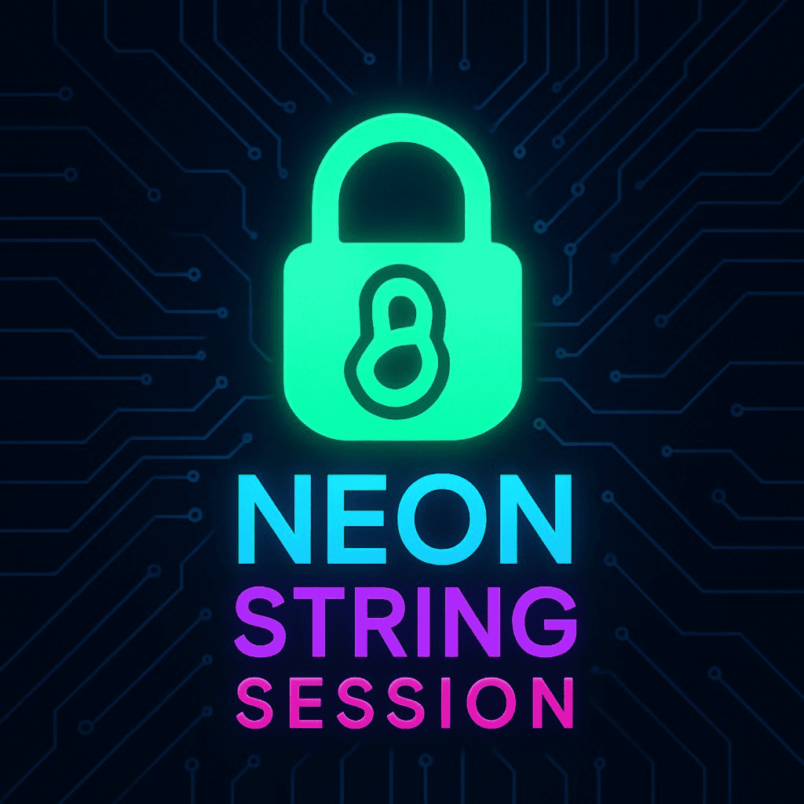

🔧 İnstrumental Botlar


STRING SESSIYA
Telegram Mahnı Botunuzun Asistan hesabı və yaxud Userbot hesabınız üçün Strinq Sessiyası Tokeni Əldə Etməyin Ən Asan Yolu!
Telegramda bax →Aşağıda müxtəlif kateqoriyalara bölünmüş botlarımı görə bilərsiniz.
Telegram Mahnı Botunuzun Asistan hesabı və yaxud Userbot hesabınız üçün Strinq Sessiyası Tokeni Əldə Etməyin Ən Asan Yolu!
Telegramda bax →